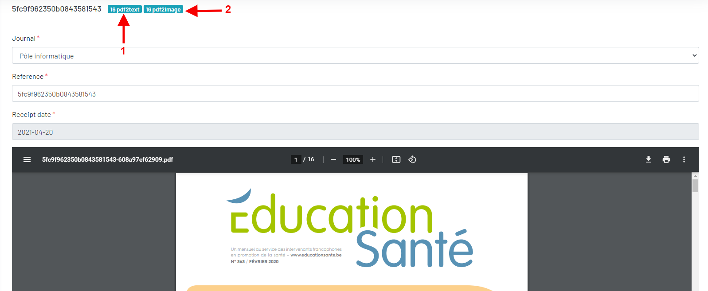
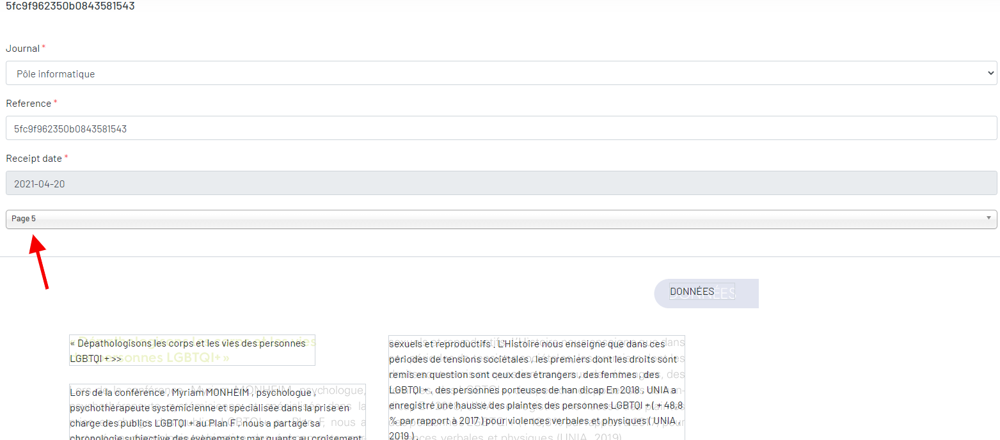

Numero
La numero a deux formats, soit en pdf soit en image.
La numero a quatre status:
submitted: Un numero est créé. Un fichier en format pdf ou plusieurs fichiers en format images sont envoyés au serveur.traitement: Transfert le fichier pdf ou image vers des textes par Google Vision API.rejected: Le transfert a échoué.published: Effectuer une recherche par dcis.
Vous pouvez ajouter, modifier, désactiver/activer et prévisualiser un numéro.
 Ajoutez un numéro.
Ajoutez un numéro.- recherchez des dcis de cette numéro.
 Visualisez le numéro.
Visualisez le numéro.- Modifiez d'un numéro.
 Désactivez ou activez un numéro.
Désactivez ou activez un numéro. Historique des modifications d'un numéro.
Historique des modifications d'un numéro.
Ajouter un numéro en format pdf
Si vous ajoutez un numéro au format PDF, l'application transforme immédiatement le pdf en texte et le numéro est maintenant dans le statut submitted.
Il y a une tache en fond qui transforme le pdf vers des images, puis transforme l'image en text par L'API Google Vision, et le numero est dans le statut traitement.
Ajouter un numéro en format d'image
Si vous ajoutez un numero au format d'image, l'application transforme l'image en texte immédiatement par L'API Google Vision, et le numéro est dans le statut traitement.
Prévisualiser un numéro
Il existe trois modes de visualisation d'un numéro
- Voir le pdf ou les images envoyées
- Pour le fichier pdf: voir le texte transformé par pdf et le text transformé par image de pdf
- pour le fichier d'image: voir le texte transformé par image

1: Pour le fichier pdf, voir le texte transformé par pdf2: Pour le fichier pdf, voir le texte transformé par image de pdf ou pour le fichier d'image, voir le texte transformé par image
Pour voir le texte transformé par image, il ne s'affiche que page par page. Il y a donc un filtre pour passer d'une page à l'autre.

Ajoutez ?scroll=1 à la fin de url pour scroller le texte, exemple: /en/admin/numero/pdf2images/2?scroll=1
Ajoutez ?no_position=1 à la fin de url pour sans position de la texte, exemple: /en/admin/numero/pdf2images/2?no_position=1